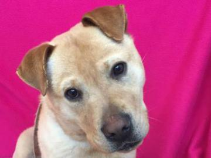

This week featured friends...
Giraffe
Hi! My name is Giraffe. I was in a shelter that lacked the resources to continue to care for me, so I came to Animal Humane Society to find a new home.
Dougie

Hi! My name is Dougie. I was in a shelter that lacked the resources to continue to care for me, so I came to Animal Humane Society to find a new home.
Millie

Hi! My name is Millie. Someone in my family was allergic to me, so I came to Animal Humane Society to find a new home.
Tutti

Hi! My name is Tutti. I required more time and attention than my caretaker could provide and I shed too much, so I came to Animal Humane Society to find a new home.